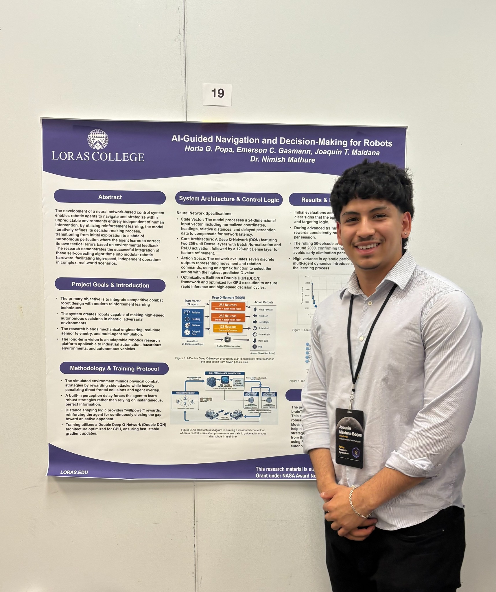
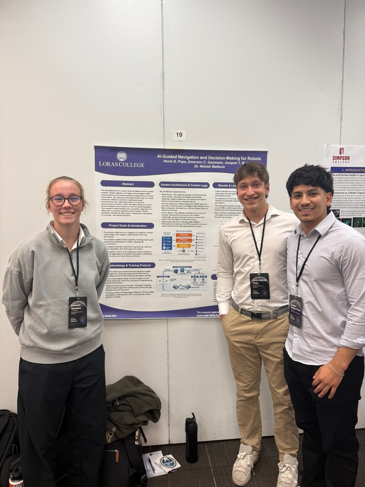
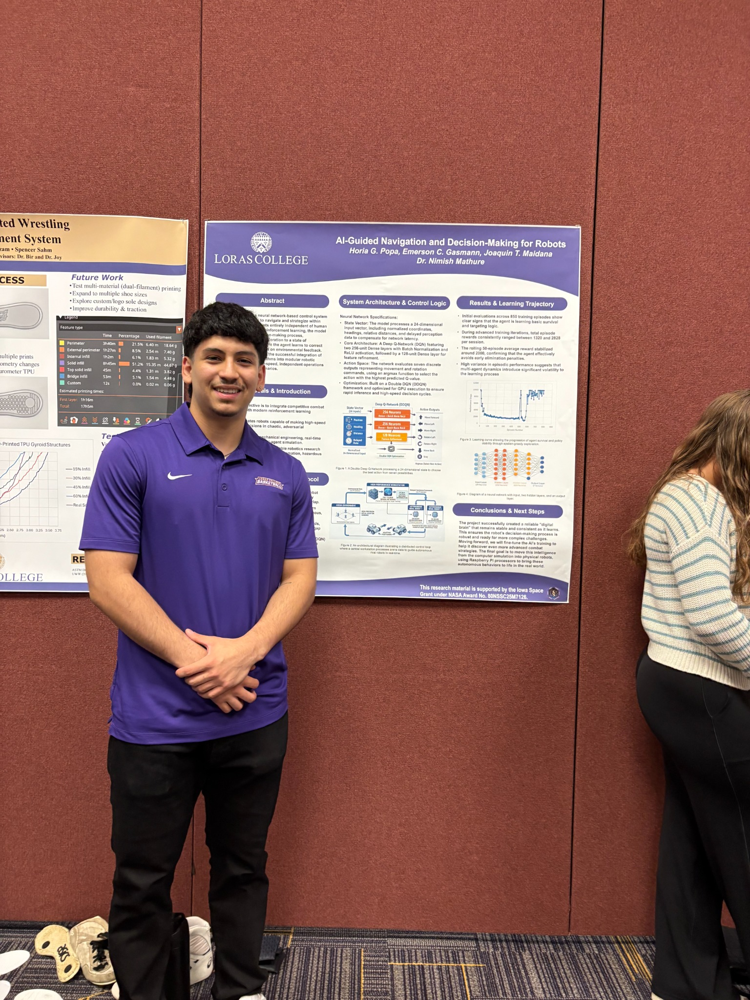
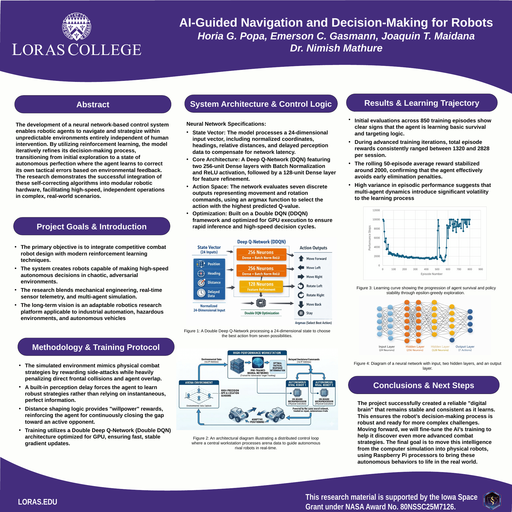

Observe the environment
A 24-dimensional state vector represents information such as positions, headings, relative distances, and delayed perception.
ARTIFICIAL INTELLIGENCE / ROBOTICS / RESEARCH
Investigating how reinforcement learning can help robots make movement decisions—and how those decisions can connect to an existing Python control system.

01 / OVERVIEW
This research explores how reinforcement learning can support autonomous decision-making in a competitive robotic environment. Rather than relying entirely on a person operating a keyboard or joystick, the long-term goal is for a trained model to select actions based on information about its surroundings.
The project combines simulated robot behavior, neural network training, and software integration. The AI was evaluated in simulation; moving the complete system onto physical robots remains a future development goal.
02 / TECHNICAL APPROACH
A 24-dimensional state vector represents information such as positions, headings, relative distances, and delayed perception.
A Double Deep Q-Network estimates the value of seven possible movement and rotation actions.
Training rewards useful tactical behavior and penalizes actions such as unfavorable collisions, helping the simulated agent improve its policy.
The model described in our research poster uses two 256-unit dense layers and a 128-unit dense layer, with batch normalization and ReLU activations. These details describe the team's research architecture, not solely my individual work.
03 / TRAINING RESULTS
The team's initial evaluation covered approximately 850 training episodes. The poster reports that later episode rewards ranged from 1,320 to 2,828, while the rolling 50-episode average settled near 2,000. These observations suggest progress in simulated survival and targeting behavior, with considerable variation between episodes.
These are simulation and research-poster results. They do not demonstrate successful autonomous navigation by a physical robot.
04 / MY CONTRIBUTION
My main contribution was adapting the robot's Python control code to accept movement commands generated by the neural network, rather than relying only on keyboard or joystick inputs. I worked on connecting the network's selected actions to the existing directional control logic.
I verified the connection in the terminal: the neural network's decision output was used as the input for the corresponding movement command. This confirmed the software-side command mapping, but I did not test the integrated neural network controller on the physical robot.
Diagram illustrates the software command flow tested during development; it is not evidence of physical robot operation.
05 / RESEARCH PRESENTATION
Our team presented the research at an Iowa Space Grant symposium and at Loras College Legacy Symposium. The poster brings together the learning architecture, training approach, simulation results, and planned next steps.



View full research poster (PDF)Research by Horia G. Popa, Emerson C. Gasmann, and Joaquin T. Maidana, with Dr. Nimish Mathure, as credited on the team poster.
06 / WHAT'S NEXT
Future work includes refining the model's training and testing its decision-making on physical robot hardware. A key next step is connecting the neural network, command interface, and robot movement system into a complete, tested control loop.
As that work progresses, I hope to add more code-level documentation, integration tests, and hardware results to this page.